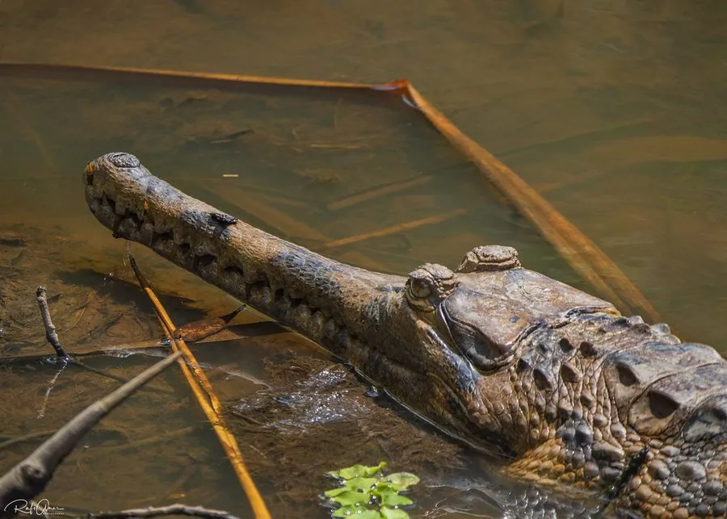

爬行动物 · 动物界
马来鳄 Tomistoma schlegelii

东南亚泥炭沼泽中的长吻鳄，吻部细长如钳，体长可达 4 米以上，曾被认为只吃鱼，实际也捕食猴类与水鸟。
- 分类
- 门脊索动物门纲爬行纲目鳄目科长吻鳄科属马来鳄属
- 栖息环境
- 马来半岛、苏门答腊与婆罗洲的泥炭沼泽、黑水河、湖泊与缓流河湾
- 地理分布
- 东南亚的马来半岛、苏门答腊岛和婆罗洲
- 保护级别
- IUCN 易危（VU）；CITES 附录 I
物种志
马来鳄体长一般 3–4 m，雄性最大可超过 5 m，体重可达 200 kg 以上。吻部极度细长，上下颌密布细齿，适合夹住滑溜的鱼；体色暗褐，幼体身上有黑色横带，背鳞发达，尾部侧扁有力，四肢短壮。
它们分布于马来半岛、苏门答腊和婆罗洲的泥炭沼泽、黑水河与湖泊，喜水流缓慢、酸性的腐殖质水体。马来鳄多在夜间活动，捕食鱼、虾、蛙、水鸟和小型哺乳动物，虽以鱼为主，也记录到捕食猕猴和野猪幼崽。雌鳄在泥炭丘或植物堆上筑巢，每窝产卵 20–60 枚，孵化约 90 天。由于沼泽排水、油棕种植和非法捕猎，其栖息地不断萎缩，被列为易危物种。
形态与习性
- 食性鱼、虾、蛙、水鸟和小型哺乳动物
- 体长一般 3–4 m，最大可超 5 m
- 体重大型个体可达 200 kg 以上
- 繁殖每窝 20–60 枚，孵化约 90 天
- 习性夜行性，喜酸性、茶色的泥炭沼泽
- 保护CITES 附录 I，禁止国际贸易
趣味知识
- 马来鳄的吻部细长，常被误认为只吃鱼，其实它也能捕食猴子和野猪幼崽。
- 它偏好酸性、茶色的泥炭沼泽水，这种栖息地正被油棕种植园迅速取代。
- 幼鳄身上的黑色横带会随年龄增长逐渐变淡。